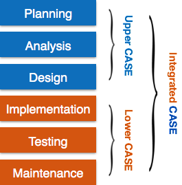

Keskenduvad teostusele, kus mudelist saab tegelik tarkvaratoode. Toetavad andmebaasi struktuuri genereerimisele, koodi genereerimisele, testide läbiviimisele, koodi versioonihaldust, konfiguratsioonihaldust, pöördprojekteerimist (reverse engineering) ja muud sellis
